Tamaño, memoria y CPU medidos en macOS con la versión 0.9.0 (documentación técnica).
Lo que necesitas para operar la red, sin lo que estorba
Conéctate rápido, ejecuta comandos con seguridad y ten tus herramientas a mano.
Liviana y rápida
Pesa unos 8 MB, usa cerca de 90 MB de memoria en reposo y no consume CPU cuando no la estás usando.
Segura por defecto
Contraseñas en una bóveda cifrada y confirmación antes de cualquier comando que pueda cortar servicio.
Comandos verificados
2.776 comandos con fuente oficial y sugerencias mientras escribes, con la sintaxis de tu equipo.
Herramientas en un solo lugar
Monitoreo, topología, transferencias, SNMP, subredes y speedtest sin abrir otras apps.
Automatización con control
Scripts Python y plugins de solo lectura por defecto, con el mismo control de riesgo que usas a mano.
Multiplataforma y portable
macOS, Windows y Linux sin permisos de administrador, y una versión portable para llevar en un pendrive.
Lista en tres pasos
Sin configuraciones largas: instalas, te conectas y trabajas.
Instala
Descarga el archivo de tu sistema desde Descargas o usa el zip portable. Las versiones instaladas se actualizan con un clic desde Ajustes › Acerca de.
Conéctate
Escribe
admin@192.0.2.1en la búsqueda (⌘K o Ctrl+Shift+K), usa la Conexión rápida (⌘O o Ctrl+Shift+O) o importa tus sesiones desde PuTTY, SecureCRT, MobaXterm, ssh_config o CSV.Trabaja
Abre el catálogo de comandos (⌘L), las notas (⌘J) y las herramientas de red (⌘E). En Windows y Linux, con Ctrl+Shift.
Aprende NetTerminal en video
Tutoriales narrados en español con subtítulos. Haz clic en un capítulo para saltar a esa parte. Todo lo que se ve usa datos ficticios.
Tutorial completo
Scripts y plugins
Así se ve
Capturas con datos ficticios: direcciones de documentación (RFC 5737) y nombres genéricos. Haz clic en una imagen para verla en tamaño completo.

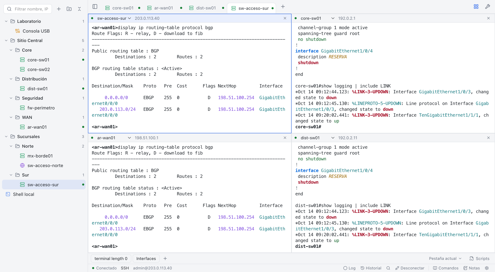

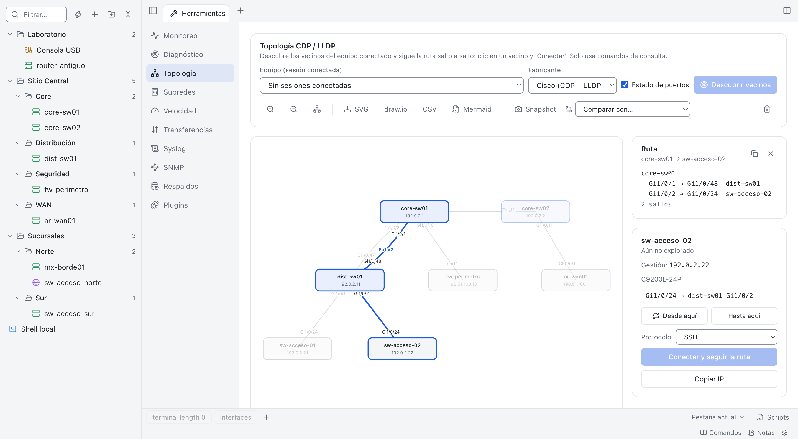

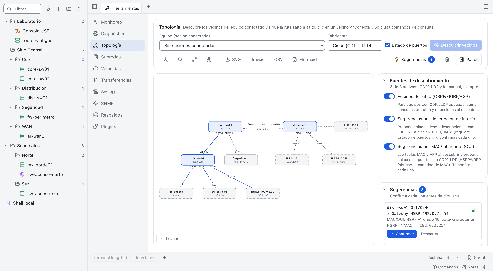

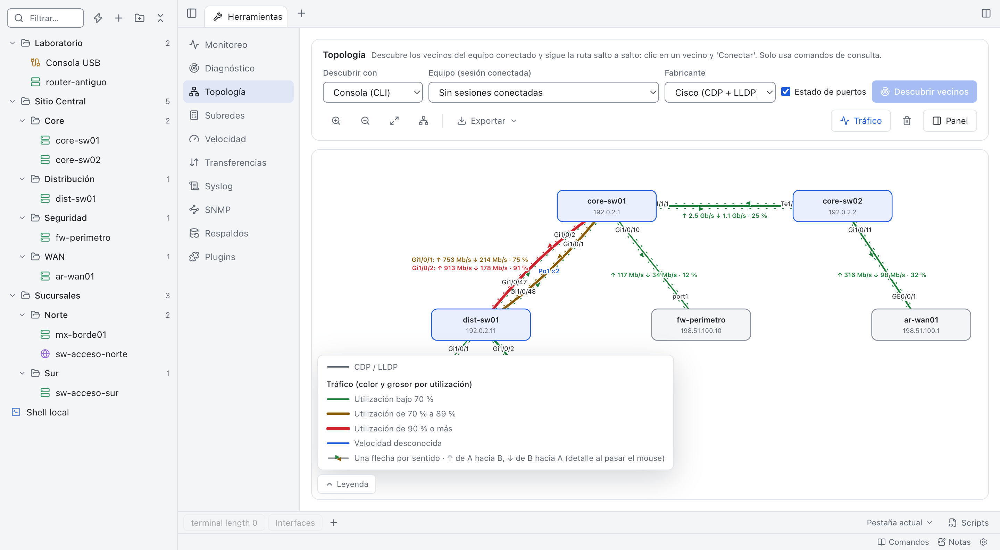

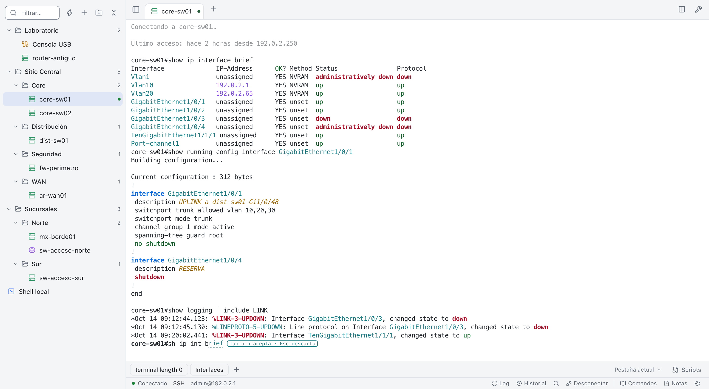

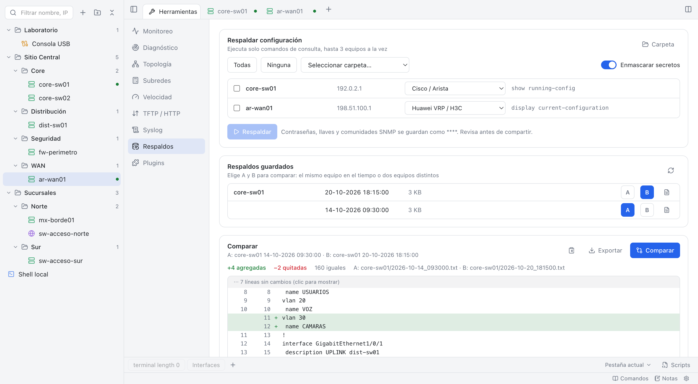

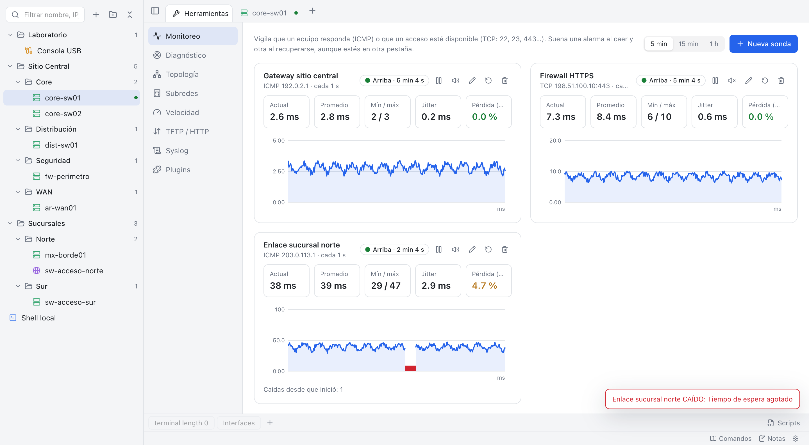

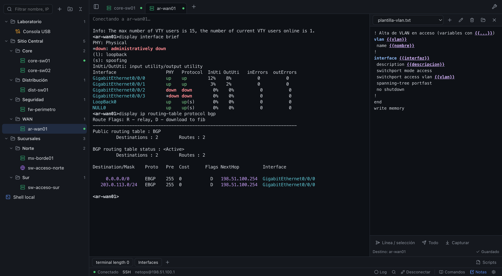

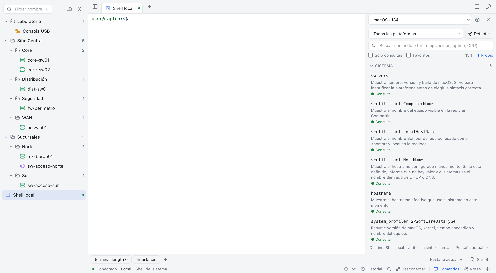

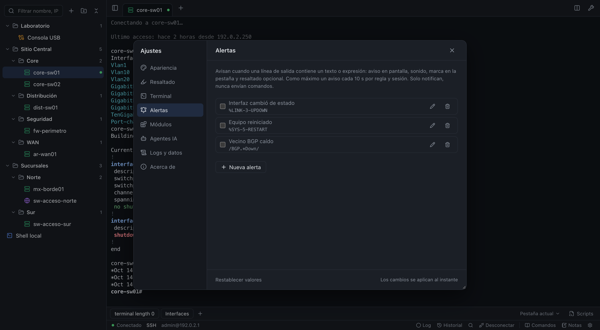

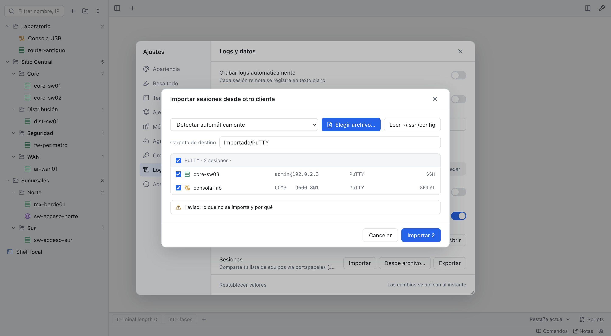

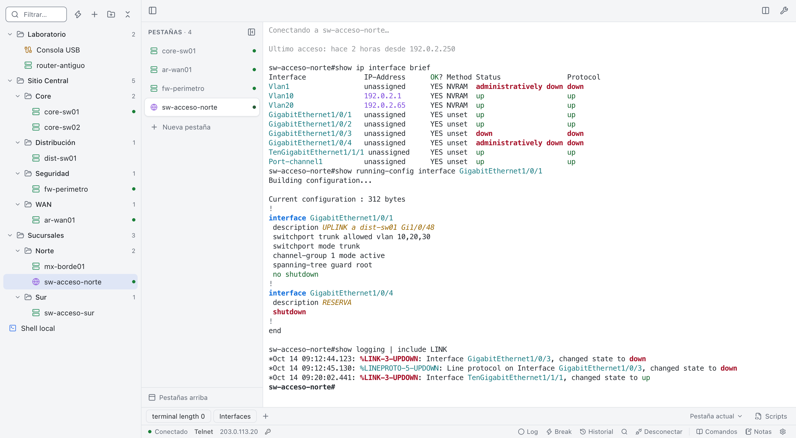

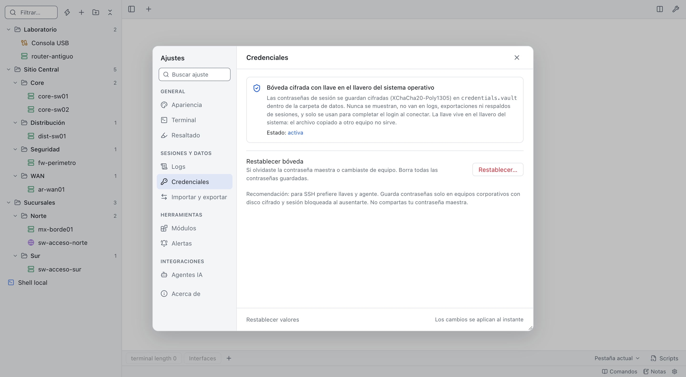

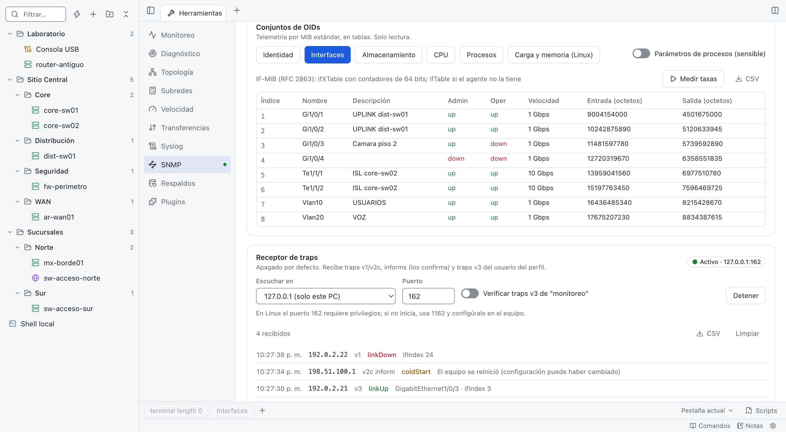

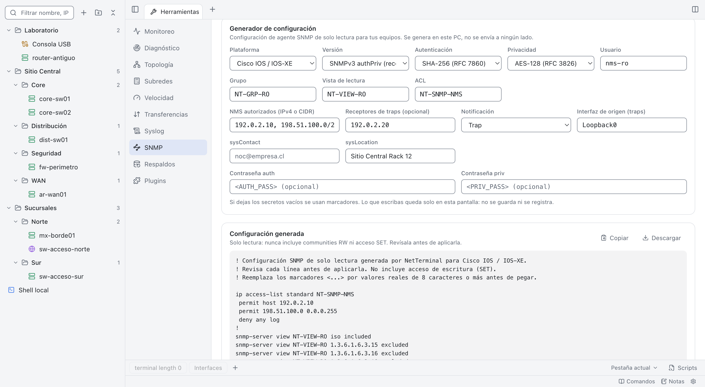

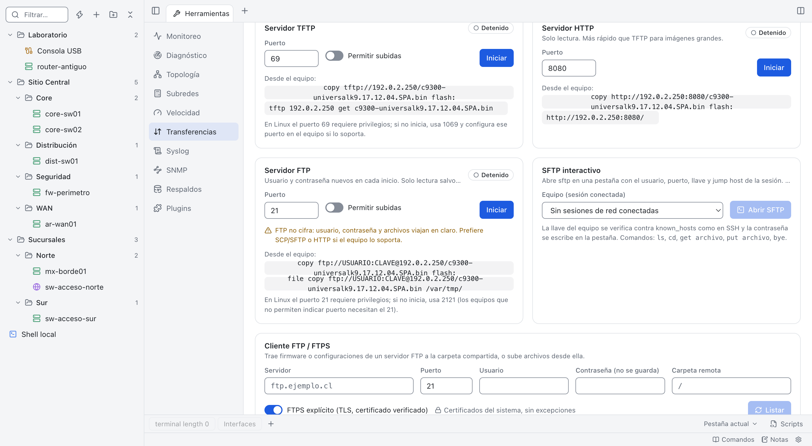

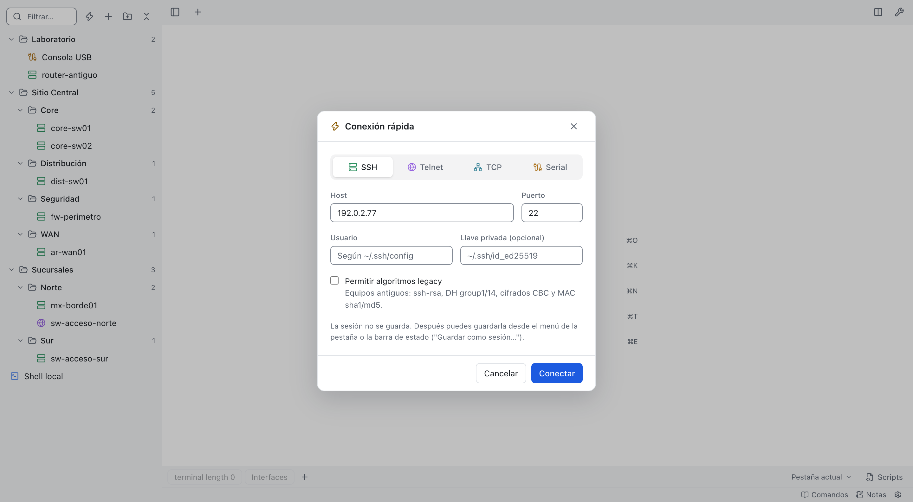

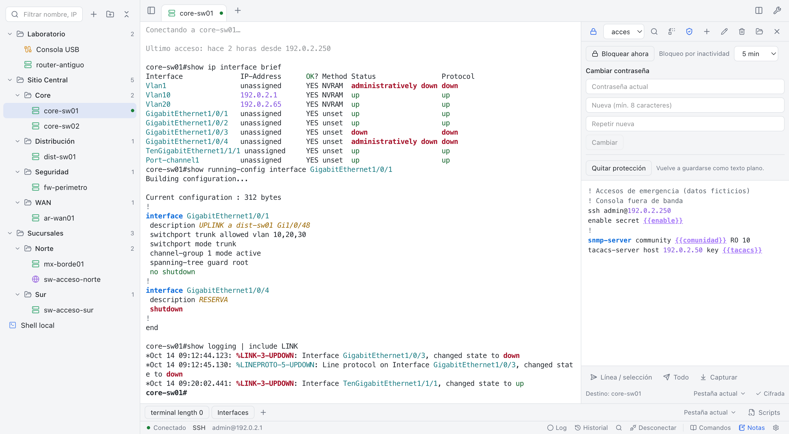

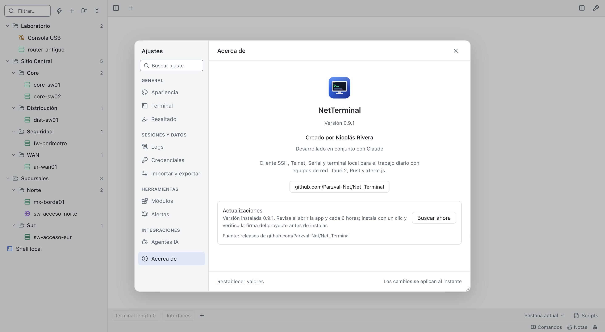
Todo lo del día a día, nada que estorbe
Cada herramienta se activa en Ajustes › Módulos: lo que no usas no se carga ni consume recursos.
SSH, Telnet, Serial y local
Llaves, jump host y túneles; TCP crudo para servidores de consola.
Sesiones e importación
Carpetas ilimitadas e importación desde tu cliente actual.
Catálogo de comandos
Sintaxis por plataforma detectada y nivel de riesgo por comando.
Vista dividida y difusión
Hasta 4 terminales a la vez y envío a varias sesiones.
Topología
Vecinos CDP/LLDP, ruta entre equipos y exportación a draw.io.
Respaldos y comparación
Solo comandos de consulta y secretos enmascarados.
Herramientas de red
Monitoreo con alarma, ping, traceroute, subredes, speedtest e iperf3.
Alertas y logs
Avisos por palabra clave y logs con secretos enmascarados.
Notas y plantillas
Variables como {{vlan}} y notas protegidas con contraseña.
SNMP
Cliente v1, v2c y v3 de solo lectura y generador de configuración.
Transferencias
TFTP, HTTP, FTP y SFTP con verificación MD5 del firmware.
Scripts, plugins y agentes IA
Python, plugins revisados y servidor MCP local con aprobación.
Ver todas las funciones en detalle
- SSH, Telnet, Serial y local
- OpenSSH del sistema con llaves, agente, jump host y túneles. Telnet nativo, TCP crudo para servidores de consola y Serial con Break. Modo legacy automático opcional para equipos antiguos.
- Sesiones y contraseñas
- Carpetas ilimitadas, importación desde ssh_config, PuTTY, SecureCRT, MobaXterm y CSV, y contraseñas en una bóveda cifrada que nunca se muestra.
- Catálogo de comandos
- Cisco, Juniper, Fortinet, Huawei, Check Point, WatchGuard, Windows, macOS y Linux, con sintaxis por plataforma, nivel de riesgo, favoritos, comandos propios y packs importables.
- Sugerencias de comandos
- Completan mientras escribes, también abreviado como en el equipo (
sh ip int br). Nunca envían Enter y se apagan en modo configuración. - Vista dividida y difusión
- Hasta 4 terminales a la vez y envío a varias sesiones con lista de equipos, riesgo por línea y botón Detener.
- Topología
- Vecinos CDP/LLDP con puertos y Port-channel, ruta entre equipos, snapshots y exportación a draw.io. Sin CDP/LLDP: vecinos OSPF/EIGRP/BGP, enlaces manuales y sugerencias por descripción o por MAC/fabricante. Descubrimiento por SNMP y tráfico por sentido en cada enlace, todo opcional y de solo lectura.
- Respaldos y comparación
- Respaldo de configuración solo con comandos de consulta, secretos enmascarados y comparación entre fechas o equipos.
- Herramientas de red
- Monitoreo ICMP/TCP con alarma, ping y traceroute, puertos, calculadora de subredes, speedtest e iperf3, servidores TFTP/HTTP/FTP y Syslog, y gestor de archivos.
- Alertas y logs
- Avisos por palabra clave en la salida y logs con nombre por patrón, rotación diaria y secretos enmascarados.
- Notas, macros y plantillas
- Plantillas con variables, notas protegidas con contraseña y botones de comandos.
- Cliente SNMP
- v1, v2c y v3 con GET, GETNEXT, WALK y GETBULK, conjuntos de OIDs y receptor de traps. Solo lectura, SHA-256 + AES-128 por defecto y secretos atados a cada equipo.
- Generador de configuración SNMP
- Agente de solo lectura para Cisco IOS-XE, NX-OS, Huawei VRP, Junos, FortiOS y net-snmp, con marcadores para los secretos y avisos donde la sintaxis depende de la versión.
- Conexión rápida y transferencias
- Conecta sin guardar la sesión con el rayo. FTP/FTPS, SFTP con OpenSSH y servidor FTP de solo lectura para pasar firmware a los equipos, con verificación MD5.
- Scripts, plugins y agentes IA
- Scripts Python con API mínima, plugins con revisión de código y servidor MCP local (apagado por defecto) con aprobación por comando.
Diseñada para entornos corporativos
Cambios controlados, nada de secretos en texto plano y actualizaciones verificadas.
Operación segura
- Contraseñas cifradas (XChaCha20-Poly1305), nunca visibles y escritas solo en el equipo de destino, nunca en el bastión.
- Riesgo por comando: lo que puede cortar servicio pide confirmación siempre, también desde scripts y plugins.
- Envío a varias sesiones con la lista de equipos a la vista y confirmación escribiendo la cantidad.
- Secretos enmascarados en logs y respaldos, y pegado de varias líneas con vista previa.
- Apagado por defecto: servidores TFTP y FTP, traps SNMP, agentes IA y algoritmos SSH legacy.
Código y distribución
- Actualizaciones firmadas: se verifica la firma antes de instalar y siempre con tu confirmación.
- Auditoría automática de dependencias (npm y cargo) que detiene la publicación.
- Argumentos SSH validados contra inyección y comandos encadenados evaluados por partes.
- Plugins con revisión de código y bloqueo si sus archivos cambian.
- Limitaciones conocidas documentadas en SECURITY.md.
2.776 comandos con fuente oficial
Cada comando trae explicación, nivel de riesgo y la sintaxis de la plataforma detectada en tu equipo.
Modo claro, oscuro y 17 temas de terminal
La interfaz sigue al sistema o se fija en claro u oscuro, con contraste WCAG AA. La terminal tiene su propio tema, fuente, tamaño y cursor.
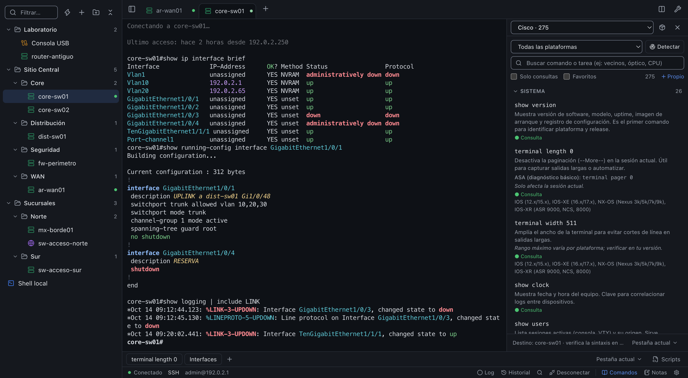
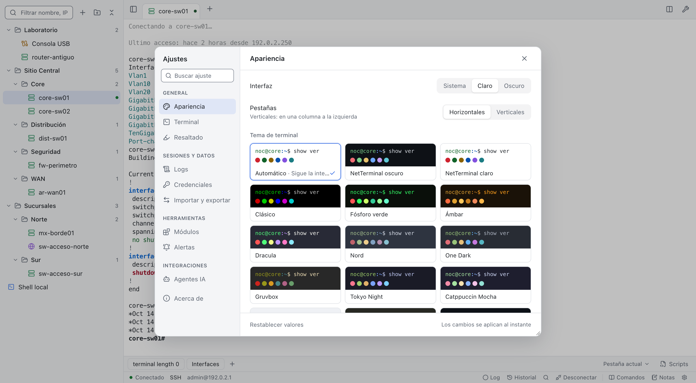
Instala o lleva en un pendrive
Todos los archivos están en la última versión publicada. Solo el .deb requiere permisos de administrador.
Windows 10/11
-setup.exeSe instala solo para tu usuario. Se actualiza con un clic.
Ir a la descargamacOS
.dmg universal (Intel y Apple Silicon)La primera vez ábrela con clic derecho › Abrir. Se actualiza con un clic.
Ir a la descargaLinux
.AppImage o .debAppImage sin instalar, con actualización en un clic. El .deb se instala y actualiza con apt.
Ir a la descargaPortable
NetTerminal-portable.zipLos tres ejecutables y tus datos en una carpeta. Actualización manual.
Descargar el zip- Windows: requiere WebView2, que ya viene en Windows 11 y en Windows 10 actualizado. Si falta, el instalador lo descarga.
- Linux: para el puerto serial tu usuario debe estar en el grupo
dialout(ouucp). - Equipos corporativos: con AppLocker o Intune una app sin firma puede quedar bloqueada. Consulta con tu área de TI.
Antes de instalar
¿Tiene costo?
Se descarga sin costo y sin registro desde la página de releases en GitHub, donde también está publicado el código.
¿Necesito permisos de administrador?
No. El instalador de Windows, el .dmg, el AppImage y el zip portable funcionan sin administrador. Solo el .deb los requiere. En Linux, agregar tu usuario al grupo dialout para usar el puerto serial requiere administrador una sola vez.
¿Funciona sin internet o desde un pendrive?
Sí. Las conexiones van directo de tu PC a cada equipo y el catálogo de comandos viene incluido en la app. Con el zip portable, sesiones, ajustes, notas y logs quedan en la carpeta data junto al ejecutable. El aviso de actualizaciones y el speedtest sí usan internet.
¿Dónde quedan mis contraseñas?
En una bóveda cifrada de la app (XChaCha20-Poly1305). La llave queda en el llavero del sistema o, en modo portable, se deriva de una contraseña maestra. Las contraseñas nunca se muestran y no pasan por logs, historial, scripts ni exportaciones.
¿Envía mis datos a alguna parte?
Tus sesiones, notas y contraseñas quedan en tu equipo. La auditoría del binario no encontró conexiones salientes incrustadas. La app consulta el último release de GitHub al abrirse y cada 6 horas para avisar de versiones nuevas, y el speedtest usa Cloudflare cuando lo ejecutas.
¿Con qué equipos funciona?
Con cualquier equipo al que llegues por SSH, Telnet, TCP o puerto serial. El catálogo de comandos cubre Cisco, Juniper, Fortinet, Huawei, Check Point y WatchGuard, además de Windows, macOS y Linux.
¿Cómo se actualiza?
La app avisa cuando hay una versión nueva y se actualiza con un clic desde Ajustes › Acerca de, siempre con tu confirmación y verificando la firma del proyecto. En modo portable y con el .deb la actualización es manual.
¿Puedo traer mis sesiones de otro cliente?
Sí. Importa desde PuTTY, SecureCRT, MobaXterm, ssh_config o CSV, con vista previa. Las contraseñas nunca se importan.